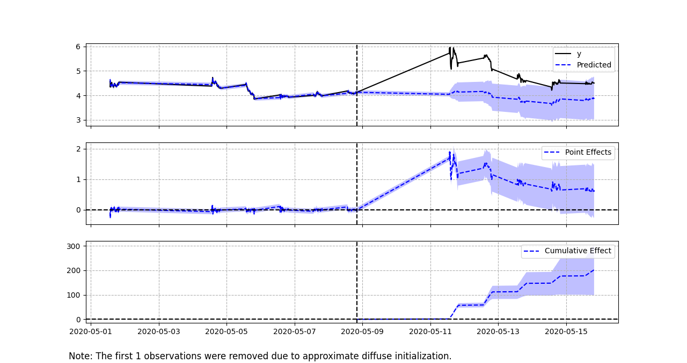

Bayesian Synthetic Controls for Market Goofs
Written by Steven Chun
Published on 24 May 2020
Say you’re Amazon. You have a lot of money, even in a pandemic, and since you’re Amazon, you hate having money. So you consider buying an entertainment company, to complement things like Prime video. Maybe you have some secret talks about buying AMC, the entertainment company.
But these things leak. The Daily Mail reported as much on May 9th . It’s a little unclear who the sources are nor whether the talks are even still active. But even under uncertainty, talk of Amazon acquiring a business that is otherwise hurting pretty badly is enough to basically double its stock price.
One small hitch is that no one was actually sure which AMC Amazon was talking about buying.

The Daily Mail article identified AMC Theatres, the cinema company. But there’s also AMC Networks, which owns shows like the Walking Dead. Both are in the business of entertainment, but one has stuff that people might want to stream and the other a bunch of empty movie theaters. Three days after the Daily Mail article, a CFTN article claimed two inside sources that said the subject of the talks was AMC Networks, not Theatres. Bloomberg’s Matt Levine points out Was the first to point out, in fact, to me, via newsletter. I’m just summarizing here. , there’s something else ,
“Yes but while AMC Networks makes more sense than AMC Entertainment as an Amazon acquisition target, AMC Entertainment has one crucial advantage, which is that its ticker is AMC. If the rumor you hear is “Amazon is buying AMC,” your first reaction might be “I need to buy some AMC stock,” and so you go buy the stock of a company whose name and ticker are AMC. And then AMC Entertainment stock goes up. Someone else hears “Amazon is buying AMC” and notices that the stock whose ticker is AMC is spiking, and so they are quite sure that the AMC that Amazon is buying is AMC Entertainment. So they buy AMC Entertainment, its price spikes more, and the rumor gains momentum. Meanwhile, AMCX, what is AMCX, Amazon is buying AMC, not AMCX.”
This is all very funny to me. Financial markets are by general public perception, serious, complicated matters. But this isn’t; this is very silly. High powered Generally, I mean there are definitely going to be a lot of retail traders here. , well-paid people got a little ahead of themselves and goofed on the order of a few hundred million dollars.
Stock ticker confusion is an old and storied tradition. COKE is not in fact, the Coca-Cola Company (KO), purveyors of fizzy beverages, it is the Coca-Cola Bottling Company, a bottling company out of North Carolina that bottles and distributes Coca-Cola products. People also confused Zoom Video, the video chatting one, with the ticker ZOOM, which is a penny stock that no one, including the SEC, has heard from in 5 years . Silly mixup, but a serious amount of money.
Intuitively, this bit exhibits symmetry. People do silly things for very serious reasons; people do serious things for very silly reasons. Like the applications of computer vision and principal component analysis for the “Quantification of Pizza Baking Properties of Different Cheeses, and Their Correlation with Cheese Functionality” .
Or, in our case, the application of fancy econometric models to measuring the impact of goofs in the financial markets.
To be clear, what I’m about to do I first read about here . Alex Hayes, a PhD candidate at UW-Madison, applied a Bayesian Synthetic Control approach “to estimate the causal impact of Musk’s tweet on the Tesla stock price (God I hate that I just wrote that sentence).” The tweet in question was the infamous “Tesla stock price too high imo” which was responsible for about a $40 drop in Tesla’s price.
Anyway, I decided this was a good bit and an even more interesting econometric technique and filed both away to regurgitate here should the opportunity arise.
Synthetic Controls
The original synthetic control method (SCM) was introduced by Abadie and Gardeazabal (2003) to study the impact of conflict—in this case, terrorism by the Basque seperatist group Euskadi Ta Askatasuna If you’re wondering why a Basque seperatist group, Basque Country being a region of Spain, has a name that’s nowhere close to Spanish, it’s because Basque is a language isolate . It has no known genealogical relationship with any other languages. Basically, it’s descended from prehistoric times, resisting amalgamation by more common Indo-European languages. —on the economy. Causal analysis is practically about measuring what has happened and estimating what the world might be like if it hadn’t happened. Obviously, observing the latter, the counterfactual, is impossible. You can’t go back in time, stop the terrorists, and then see what happens to the economy If you’re interested in this screenplay, however, my email is at the bottom of the page. . Generally, the next best thing is randomized controlled trials. Scientific experiments, basically. You have a population that’s roughly representative, and you randomly treat some of them and measure the impact. But practical and ethical considerations prevent you from randomly doing terrorism to people.
So we’re left with observational studies that attempt to tease out the causal relationship by finding natural experiments and making careful arguments about the right controls. These can be hard to do, though, when your variable of interest is something as complicated and many-faceted as the economic wellbeing of a region distinctly different from others around it. The classic approach is a diff-in-diff analysis. Famous examples of this are Card (1990) , studying the impact of the Mariel Boatlift on Miami’s labor market, and Card and Krueger (1993) , estimating the impact of a minimum wage change in New Jersey by using fast-food restaurants just across the border as a comparison. Classics, absolute bangers.
So Abadie and Gadeazabal said, “what if we don’t need to find a region that looks just like Basque Country, what if we built one with math?” So they built a synthetic control of Basque Country. Basically, you pick some similar but different regions that exhibit similar economic trends to Basque Country. You can then use pre-treatment data to build a model of Basque Country as a weighted average of these other regions. Use this model to estimate a counterfactual of the post-treatment period; do your causal analysis.
There are a few problems with this. A lot of it comes down to not really knowing how well you’ve actually modeled Basque Country. Traditional SCMs don’t indicate their uncertainty via something like confidence intervals, and so your model might be garbage and you don’t know it. There’s also the typical problem of overfitting to the pre-treatment data.
Bayesian Synthetic Controls
In order to improve on some of the aforementioned shortcomings of SCMs, a team at Google Disclaimer: I work at Google, but I was not involved in the development of this model. introduced an approach they like to call Causal Impact . The skinny of it is instead of just using a weighted average, they use a Bayesian structural time-series model. I really don’t have a good intuition for what’s going on here, but I’ll leave you with this from Brodersen et al. 2015 ,
“We combine the three preceding sources of information [time series data of the pre-treatment object of interest, the behavior of other time-series predictive of your object of interest, and prior knowledge about the object of interest] using a state-space time-series model, where one component of state is a linear regression on the contemporaneous predictors. The framework of our model allows us to choose from among a large set of potential controls by placing a spike-and-slab prior on the set of regression coefficients and by allowing the model to average over the set of controls (George and McCulloch , 1997). We then compute the posterior distribution of the counterfactual time series given the value of the target series in the pre-intervention period, along with the values of the controls in the post-intervention period. Subtracting the predicted from the observed response during the post-intervention period gives a semiparametric Bayesian posterior distribution for the causal effect”
I think the reason I don’t really understand this is that I don’t understand the whole Frequentist vs. Bayesian thing nor do I have much intuition for what a prior is. Generally, though, instead of the weighted average approach to SCM, they seem to be using a model more akin to a Markov Chain or somethingA better understanding of Bayesian statistics is en route whenever I get around to it. .
Normally, I’m loathe to use a model I don’t fully understand, but Google published their work as a super easy to use R package (which someone then converted to a super easy to use python package), and it really works well for the bit.
The Question
How Much of AMC Theater’s Price Increase can we Attribute to a (Potential) Company Mixup?
We’re going to be doing a really quick-n-dirty causal analysis here. Like, smash and grab. I have other things to doNot true. .
We’re going to use the SP& 500 to build our synthetic control for AMC. The idea here is that the S&P 500 should reflect any general macroeconomic effects that might affect AMC. There’s a glaring problem here, which is that Amazon is in the S&P 500 and so if the announced talks between Amazon and AMC increase both their stock prices, this will bias our effect downward. Also, the S&P 500 isn’t very predictive on the intraday trading of any one firm. Oh well.
I pull about two weeks of price data at ten minute intervals for AMC and VOO, the Vanguard S&P 500 index.
The article ran on a Sunday, so we partition the data so that the pre-treatment data ends on the Friday before the article. Then, we just give Causal Impact the data.
Here’s what it spits out:

Since I indexed our data using a Pandas date object, we see the times when the market is closed as straight lines between the actual data. You can see from the point effects panel, that the pre-treatment effect, which we’d like to be zero, is fine-ish. It bounces around a bit, but generally hovers around zero. Like I mentioned before, the S&P 500 is a huge thing with a lot of inertia that isn’t going to help explain intraday AMC trading much—even though it’ll capture rough days on the market in general. One thing we might’ve done is used another cinema-owning company to help capture intraday trends better. It might also bias our estimate upwards, however, if people expect an Amazon owned AMC to smash its competitors, and so people start selling or shorting Cinemark stock or something.
A nice thing to see is the confidence interval growing in the cumulative effect panel. The further out our model interpolates I know what I said. Because our model is using post-treatment data from the control time series to estimate the post-treatment counterfactual, we’re actually interpolating rather than extrapolating. This is another nice benefit of SCMs. , the less certain we should be.
Causal Impact also gives us a sense of the shape of the effect, which a lot of methods won’t get you. We can see the uncertainty about the initial report kick in and the initial excitement about AMC Theaters decay.
Interpreting this as a single descriptive statistic is a little tricky. For a lot of metrics, you might add up the pointwise impact across the post-treatment period. This is a little odd for a stock price, which isn’t like revenue, where you can say, “oh look we made X amount of money over Y days because of the treatment”. You can think of it this way: If you owned a bunch of AMC stock, and every ten minutes that the markets were open, you sold exactly one share, and you did this the Monday, Tuesday, and Wednesday after the Daily Mail story broke, you would have made 981.57 dollars. This model predicts that if people hadn’t read that Amazon might buy AMC, you would’ve probably made somewhere between 683 and 881 dollars.
Is that super useful? Not really, but then again what are we measuring here? We’re measuring the market’s valuation of AMC under the belief and ensuing uncertainty that Amazon might want to buy it. Nothing, of course, actually changed about AMC. People’s expectations of future value changed, and that was then incorporated into the price of AMC. You could’ve turned that belief into real money if you sold a bunch on Monday. But after a few days, people realized their belief about AMC might’ve been a goof, and so the price increase, representing that belief, largely evaporated. AMC doesn’t get to keep it.
Stock prices over time are little like Santa’s sleigh that runs on Christmas cheer. You can turn cheer into flight at any given moment, but if on Christmas Eve, all that cheer evaporates because Connecticut Financial NewsWhich, it turns out, is what CTFN stands for. reports that this whole Christmas thing was, in fact, a mixup and we need to be doing wacky Yule stuff to celebrate the Wild Hunt, then tough luck.
The Causal Impact package very nicely generates a report for you, so you read this and see if you can come up with a better freakin analogy:
During the post-intervention period, the response variable had an average value of approx. 4.93254. By contrast, in the absence of an intervention, we would have expected an average response of 3.91743. The 95% interval of this counterfactual prediction is [3.43472, 4.4284]. Subtracting this prediction from the observed response yields an estimate of the causal effect the intervention had on the response variable. This effect is 1.0151 with a 95% interval of [0.50414, 1.49782]. For a discussion of the significance of this effect, see below.
Summing up the individual data points during the post-intervention period (which can only sometimes be meaningfully interpreted), the response variable had an overall value of 981.575. By contrast, had the intervention not taken place, we would have expected a sum of 779.56923. The 95% interval of this prediction is [683.50915, 881.251].
The above results are given in terms of absolute numbers. In relative terms, the response variable showed an increase of +25.91249%. The 95% interval of this percentage is [12.86916%, 38.23469%].
This means that the positive effect observed during the intervention period is statistically significant and unlikely to be due to random fluctuations. It should be noted, however, that the question of whether this increase also bears substantive significance can only be answered by comparing the absolute effect (1.0151) to the original goal of the underlying intervention.
The probability of obtaining this effect by chance is very small (Bayesian one-sided tail-area probability p = 0.0). This means the causal effect can be considered statistically significant.
You can find the code and data for this analysis here .
06/24/20 - Update: I realized CausalImpact was setting a prior standard deviation that was probably too low for this data (again, firing from the hip here. Not well versed in these sorts of models). The package has an option to allow the model to pick the standard deviation itself, which generates much more reasonable looking credible intervals. I have updated the report and the graph and any other numbers that were sourced from that analysis. Thanks to B. Hie for the catch.